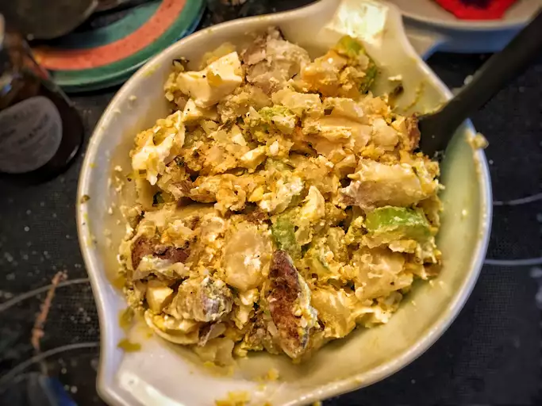

Southern Potato Salad Recipe

This is a basic potato salad recipe which consists of a few simple ingredients.
Ingredients
- 4 potatoes
- 4 large eggs
- half cup of mayonnaise
- half celery stalk, chopped
- quarter cup sweet relish
- 1 clove garlic, minced
- 2 tablespoons prepared mustard
- salt and pepper to taste
Directions
- Bring a large pot of salted water to a boil. Add potatoes and cook until tender but still firm, after 15 minutes drain and chop.
- At the same time, place eggs in a saucepan and cover with cold water. Bring water to a boil; cover, remove from heat, and let eggs stand in hot water for 10 to 12 minutes. Remove from hot water; peel and chop.
- Combine cooked potatoes and eggs with mayonnaise, celery, relish, garlic, mustard, salt, and pepper in a large bowl.
- Gently mix together and serve warm.